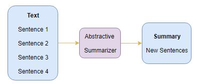
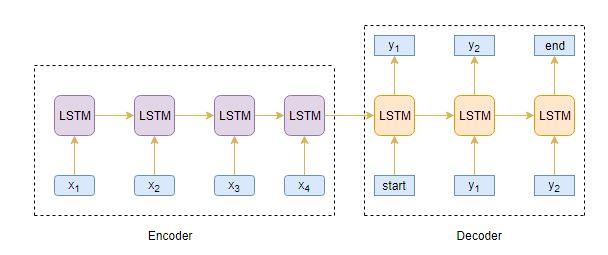
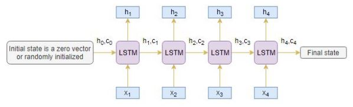
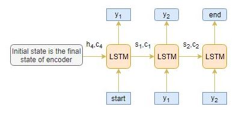
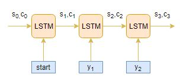
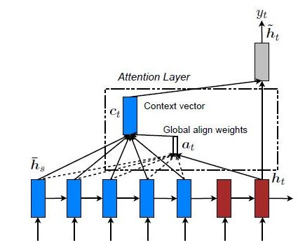
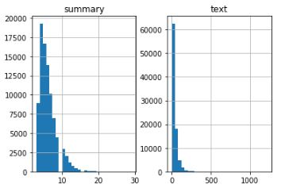
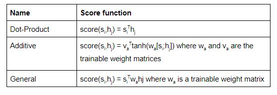
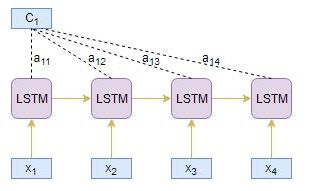

什么是NLP中的文本摘要
自动文本摘要是在保持关键信息内容和整体含义的同时，生成简洁流畅的摘要的任务。
文本摘要目前大致可以分为抽取式与生成式两种类型：
- Extractive Summarization：根据词语重要性、句子重要性排序，抽取出重要度高的句子，从而形成摘要。主要是对文本的选择，算法过程相对更容易，但是对于复杂的文本时，很难仅仅通过选择文本来形成摘要，如小说。
- Abstractive Summarization：过程更为复杂，但生成能力更强，可认为有一定的概括能力。
Extractive Summarization
由图可以看出，这种方法提取的内容语句来自于原文。
Abstractive Summarization
由图可以看出，这种方法提取的内容语句可能不存在于原文。

Seq2Seq模型
Seq2Seq模型可以处理一切连续型信息，包括情感分类，机器翻译，命名实体识别等。
机器翻译任务中，输入是连续文本序列，输出也是连续文本序列。
命名实体识别中，输入是连续文本序列，输出是连续的标签信息。
所以，我们可以利用Seq2Seq模型，通过输入一段长文本，输出短的摘要，实现文本摘要功能。
下图是典型的Seq2Seq模型架构:

通常我们可以选择RNNs网络的变体GRU或者LSTM，这是因为它们能够通过克服梯度消失的问题来捕获长期依赖性。
Encoder编码器
LSTM中的Encoder读取整个输入序列，其中每个时间step上，都会有一个字输入编码器。然后，他在每个时间step上处理信息，并捕获输入序列中存在的上下文信息。

最后时间step的隐藏层h4与记忆单元层c4将会用来初始化Decoder。
Decoder解码器
Decoder是LSTM结构的另一部分。它逐字读取整个目标序列，并以一个时间步长预测相同的序列偏移量。
解码器可以在给定前一个单词的情况下预测序列中的下一个单词。解码器的初始输入是编码器最后一步的结果。

在将整个目标序列放入解码器前，还需将[start] 与 [end]这两个特殊的tokens加入序列中，告知模型的开始与结束。模型通过输入的[start]开始预测第一个词,而[end]则表示整个句子的结束。
Deocder的工作流程
假设输入序列为[x1,x2,x3,x4],将其编码成内部固定长度的向量。
下图显示了每一个time step下Decoder是如何工作的。

推理部分
下图是整个Encoder-Decode的结构。通过上面的理解，我觉得这个图非常清晰。
- Encoder整个输入序列，并且用Encoder最后一个状态结果来初始化Decoder。
- 将[start]作为输入传递给解码器Decoder。
- 使用通过Encoder初始化过的Decoder运行一个time stpe。
- 输出将是下一个单词的概率，将选择概率最大的单词。
- 这个预测的单词将会在下一时间Step中作为输入。并且通过当前状态更新内部参数。
- 重复步骤3-5，直到生成[end]或达到目标序列的最大长度。
Encoder-Decoder结构的局限性
Encoder将整个输入序列转为固定的长度，但是当序列很长的时候，Encoder将会很难记住整个序列的内容，无法将所有必要信息准确的编码到固定长度。但是，我们需要关注序列中所有的内容么，不需要。
注意力机制
为了解决长句子的问题，注意力机制出现在人们的视野。注意力机制为对结果重要的部分添加高的权重，以保留主要信息。举个例子：
- 需要编码的序列[x1,x2,x3,x4,x5,x6,x7]
Source sequence: Which sport do you like the most?
2. 需要解码的序列[y1,y2,y3]
Target sequence: I love cricket.
我们可以判断，y1[I]与x4[you]有关，而y2[love]则与x5[like]有关。所以，相比记住序列中的所有单词，不如增加对目标序列重要部分的权重，忽视低权重的部分。
Global Attention and Local Attention
编码器的隐藏层中，所有部分都参与attention计算上下文。

编码器的隐藏层中，仅有部分参与attention计算上下文。
本文最终采用全局注意力机制。（只是添加了注意力机制，编码的固定长度依然需要固定。所以实战中需要通过数据确定一个合适的长度数值。短了无法表达文本内容，长了会造成计算资源浪费。）
实战
我们的目标是为亚马逊美食评论生成文本摘要。(这里我只提取了我觉得有用的部分)
数据表述
这些评论通常很长而且具有可描述性。数据集下载：kaggleData。
数据涵盖了超过10年的时间，包括截至2012年10月的所有〜500,000条评论。这些评论包括产品，用户信息，评级，纯文本评论和摘要。它还包括来自所有其他亚马逊类别的评论。
数据处理
由于评论文本和摘要中涉及的预处理步骤略有不同，因此我们需要定义两个不同的函数来预处理评论和摘要。
评论文本处理
- 将所有字母小写；
- 移除HTML标签；
- Contraction mapping；
- 移除(‘s)；
- 删除括号内的内容(觉得括号里面的内容解释说明不重要)；
- 消除标点符号和特殊字符；
- 删除停用词；
- 删除低频词；
摘要文本处理
为摘要文本添加[start]和[end]。
数据分布
通过数据统计，可以看到摘要与文本数据的长度分布。通过数据可视化，我们可以将评论文本的长度限定在80，而摘要的长度限定在10。

建立Tokenizer
通过分词器生成词汇表，并将单词文本序列转为数值序列，方便计算机计算。
模型建立
- 我们可以选择是否让LSTM在每个时间步都会生成隐藏状态h和记忆单元状态c。
- 选择LSTM是否仅生成最后一个时间步的隐藏状态h和记忆单元状态c。
- 选择LSTM相互堆叠提高模型效果。
- 选择双向LSTM，可以双向处理文本数据，获取更加丰富的上下文信息。
- 使用beam search strategy代替贪婪方法argmax。
- 根据BLEU分数评估模型的性能。
- 可以选择指针生成网络，
- 因为整数序列采用独热编码的方式，所以损失函数采用了稀疏交叉熵，对内存友好。
数学理解注意力机制
编码器为源文本序列每一个时间步j都生成了一个隐藏状态值hj。
相似的工作，解码器为目标文本每一个时间步i都生成了隐藏状态值si。
alignment score: $e_{ij}$。用这个分数表示源文本中的第j步单词与目标文本中第i步单词的关联度。可以用hj与si来计算这个分数值$e_{ij} = score(s_i,h_j)$
根据所使用的得分函数的类型，有不同类型的注意力机制。这里列举一些流行的注意力机制：
使用softmax函数对注意力参数的值进行归一化。$a_{ij}=\frac{e_{ij}}{\sum^{T}{k=1}e{ik}}$
计算注意力权重$a_{ij}$与编码器hj的隐藏状态乘积的线性总和，以产生注意力上下文向量Ci。$C_{i} = \sum^T_{j=1}a_{ij}h_{ij}$
将注意力上一下文向量Ci与目标隐藏层向量si级联以产生新的注意力隐藏层向量Si。$S_i=concatenate([s_{i};C_{i}])$
将注意力隐藏层向量传入密集层产生yi。$y_{i}=dense(S_{i})$
英文原文
本文由公众号【深度学习视觉】整理。